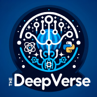

ABOUT
Welcome - my name is William de Melo, and I am a master’s student in University of California San Diego’s Computational Social Science (CSS) program. I study advanced math and programming to implement machine learning models, and am also well-versed in research from my undergraduate background in psychology. I am most interested in using what I learn to benefit modern mental health interventions that can benefit from AI, like Crisis Text Line , which I am a proud volunteer for.
You can read all about my expereinces, past research, and ongoing projects below. If you would like to get in touch with me, please reach out to me on LinkedIn, or fill out the contact form at the bottom of this page.
CV
This is my complete Curriculum Vitae, with all of my accomplishments from my undergraduate education onwards.
DEEPVERSE
The DeepVerse series of projects are meant to bridge the gap between AI tools and social sciences by designing wrappers for machine learning software.
We aim to assist social scientists in their research by providing these easy-to-use tools for free and completely open-source.
We are currently working on the publication of DeepComplete, a software package that uses autoencoding and adverserial neural networks to impute missing data.
This novel approach has several advantages over traditional imputation tools, and can fit a broader range of application with increased precision.
Find out more here:

RESEARCH
Posters
Investigating Gender Differences in Life Goals Before and During COVID-19
For this study, I analyzed data collected by our Principal Investigator, Dr. Esther S. Chang. Dr. Chang had surveyed students from UC Irvine once in 2009 and again in 2021 on what kinds of life goals they prioritized. We were specifically looking for how students' priorities had shifted in response to the COVID-19 pandemic. I formatted the data so that analyses could be conducted despite the differences in how they were collected in both years. I also conducted the chi-square test in stata to determine significant differences in life goal distribution among male and female students. Our findings suggested that male participants' life goals did not change as a result of the COVID-19 pandemic, but female participants' life goals changed drastically. Lastly, I designed and created the layout for the poster, including writing all of the content, and presented at the 2023 Western Psychological Association Conference.
Potential Effect of Mothers' Shared Agency on Occupational Goal Stress
This study focused on identifying correlations between parents' caretaking styles and students' motivational thinking and stress, as self-reported by college students. According to motivational theory, students' stress is reduced by their ability to self-motivate, which in turn is affected by how their parents interact with them. We found that supportive parenting positively correlated with motivational thinking, thus reducing stress. Noninvolved parents, however, negatively correlated with motivational thinking and increased stress. Directed parenting, referring to caretaking that is overly involved with the students' choices, may directly affect stress without affecting motivational thinking. I assisted in the construction and presentation of this poster at the 2022 Western Psychological Association Conference.
PROJECTS
These are some of the independent projects that I update regularly. You can find all of the materials, and my other projects, on my GitHub.
Machine Learning for Emotional Intelligence
In this project, I combine two machine learning models in order to predict people's emotions. I use a convolutional multilayer perceptron trained on images of people's facial expressions to infer emotion from one's countenance. I also use a text classifier trained on emotionally charged short phrases to infer emotion from text. Using a soft voting ensemble, I weigh and add the outputs of both models to produce a combined prediction. This ensemble can infer emotions from image-text pairs with around 52% accuracy.
Predicting Depression in Florida
Using machine learning, I attempt to impute missing data on depression rates in Floridian counties.
I do this by classifying data for all other US counties as belonging to one of four nationwide quartiles for depressive rates, and using a variety of machine learning models to classify Floridian counties based on which quartile they belong to.
The data used by these models to predict depressive rates comes from various sources, from basic demographics to crime rates and epidemiology.
I test out six different machine learning models, finding that a Support Vector Classifier (SVC) works best at predicting depression rates with 72% accuracy.
Then, to combine their strengths, I combine my models' predictions together to have them "vote" on their preedictions for depressive rates in Floridian counties.
Overall, my models predict floridian counties as being less mentally healthy by having higher rates of depression on average, with the exception of Miami-Dade county, which is projected to be in the top quartile of least depressed counties in the US.